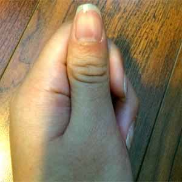
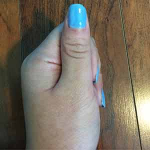
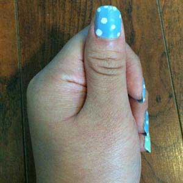

♠ Dotted Nails ♠
Materials: Any colors of nail polish that you like
Revlon, Dreamer
Sally Hansen Hard as Nails, Hard to Get
OPI base coat
| Step 1: Apply the base coat on your nails first. |  |
| Step 2: Use the blue nail polish (Revlon, Dreamer) to apply as the base color of your nails. You may apply 2-3 times in order to make sure it look solid enough. |  |
|
Step 3: Wait until the color base is completely dry the dip the dotting tool in white nail polish (Sally Hansen, Hard to Get) and create random dots on your nails.
*Tips: Try to make it look spontaneous. It'll not look cute and beautiful if you create too many dots. |
 |
-Nail Art Tutorials-